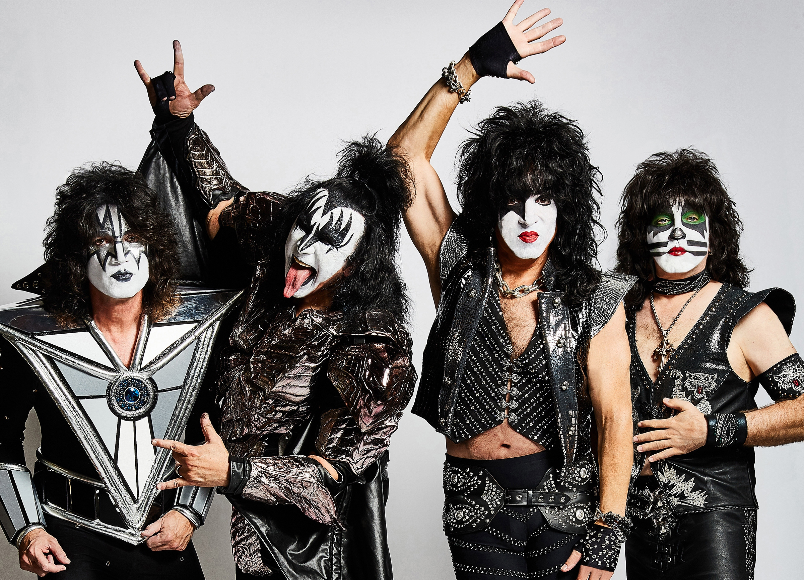

Главная страницаПрародитель всей современной музыкиСамые популярные жанры музыки |
Метал - это направление рок музыки, которое впоследствии стало чем-то большим. Это направление музыки представляет из себя множество поджанров, которые объединяет одно - агресивность и усилиные басы. Также этому жанру присущи громкие кричащие звуки
